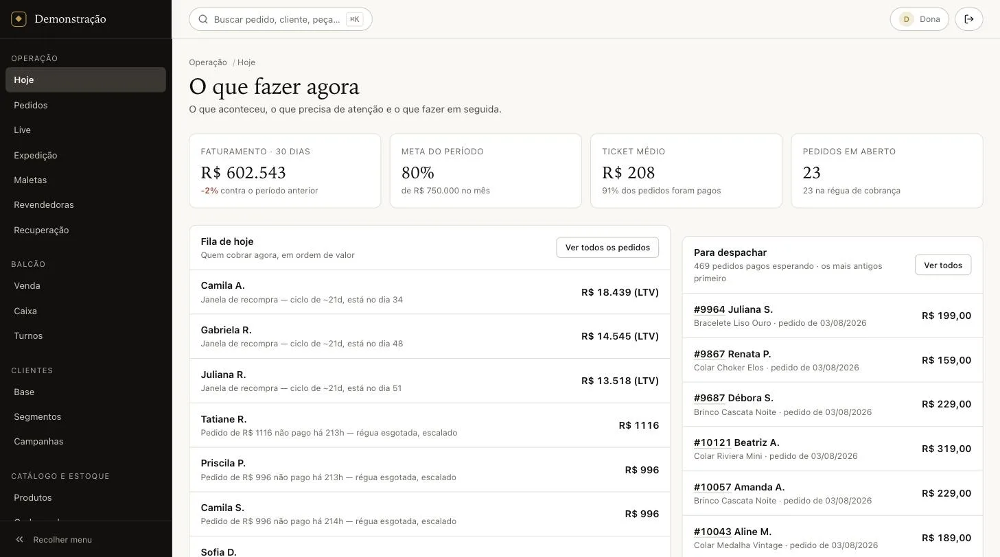
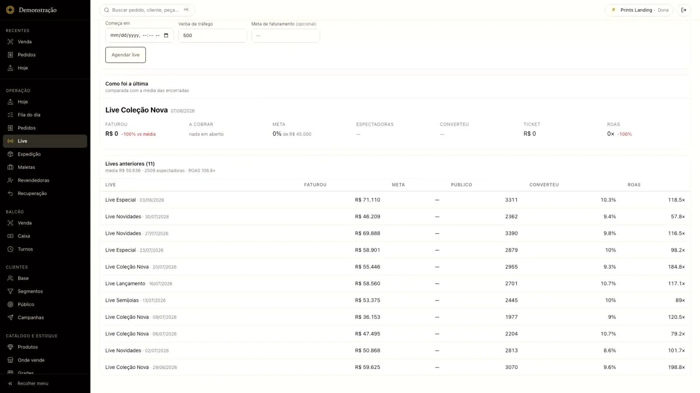
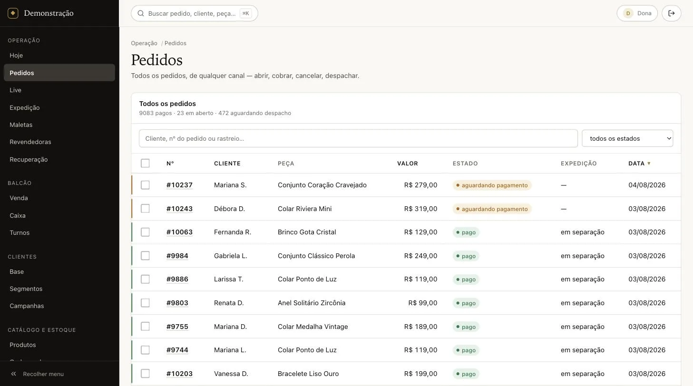
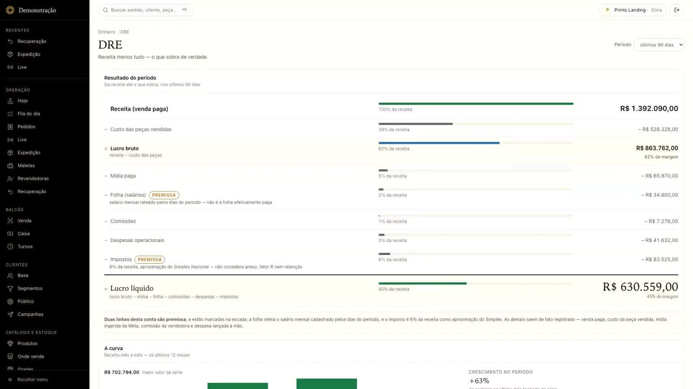
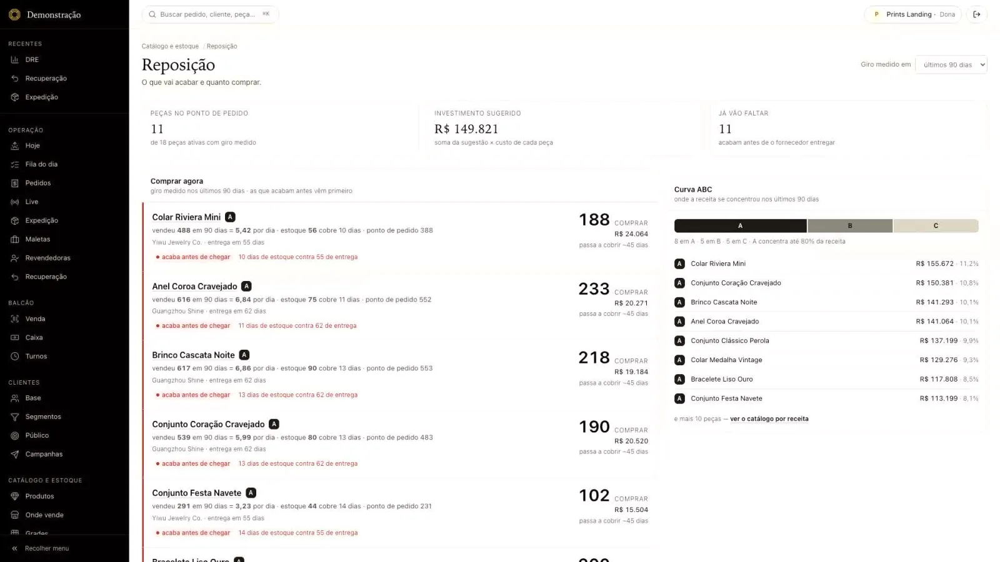
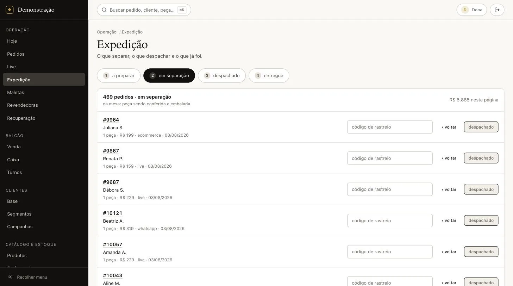

Jewelry OS
A live termina com pedido, estoque, cobrança e etiqueta prontos

O que muda no seu negócio
A lojista que vende ao vivo para de digitar a mesma venda em cinco lugares. O pedido da live já baixa o estoque, entra na fila de cobrança e aparece na expedição.
De manhã, a primeira tela responde duas perguntas: quem cobrar hoje, em ordem de valor, e quantos pedidos pagos estão esperando despacho.
O problema
Quem vende joia por live opera em cinco lugares: a planilha do estoque, o caderno dos pedidos, o print do comprovante no WhatsApp, o banco para conferir o Pix e outro caderno para a expedição.
Cada venda vira trabalho repetido em todos eles, e ninguém enxerga o todo: quanto sobrou no mês, quem não pagou, o que precisa ser recomprado, qual peça encalhou.
O que o sistema faz
- Painel de live com faturamento, público, conversão e retorno por transmissão.
- Pedidos de todos os canais numa lista só, com linha do tempo de cada um.
- Expedição em quatro etapas, com o rastreio na própria linha.
- Recuperação de venda: quem contatar, quanto vale e qual o próximo passo.
- Venda de balcão com leitura de código e várias formas de pagamento.
- Resultado do mês calculado: receita, custo das peças, mídia, folha, comissões e imposto.
- Reposição que cruza giro, curva de vendas e estoque disponível.
- Loja online própria, maletas de consignação e cotações de atacado.
Telas





O que prova a engenharia
- 720
- testes de tela e de fluxo no painel e na loja
- 75
- suítes de teste no servidor e na central de lojas
- 6
- papéis de acesso, da dona à expedição
A inteligência artificial sugere, a pessoa aprova
Toda sugestão de IA entra numa fila de aprovação. Se a IA falhar, o sistema responde por regra e diz de onde veio o número. Nunca inventa valor.
A central pode cair que a loja continua vendendo
O que cada loja contratou viaja como documento assinado e fica gravado na própria loja. Nenhuma venda depende de consultar um servidor central.
Legível com o celular numa mão
Um teste calcula o contraste das cores reais da tela e outro mede o tamanho dos botões. A vendedora opera no meio da live, e a tela reprova se dificultar.
Stack
Painel e loja em Next.js 16 e React 19 com CSS puro. Servidor e central de lojas em Python só com a biblioteca padrão e SQLite.